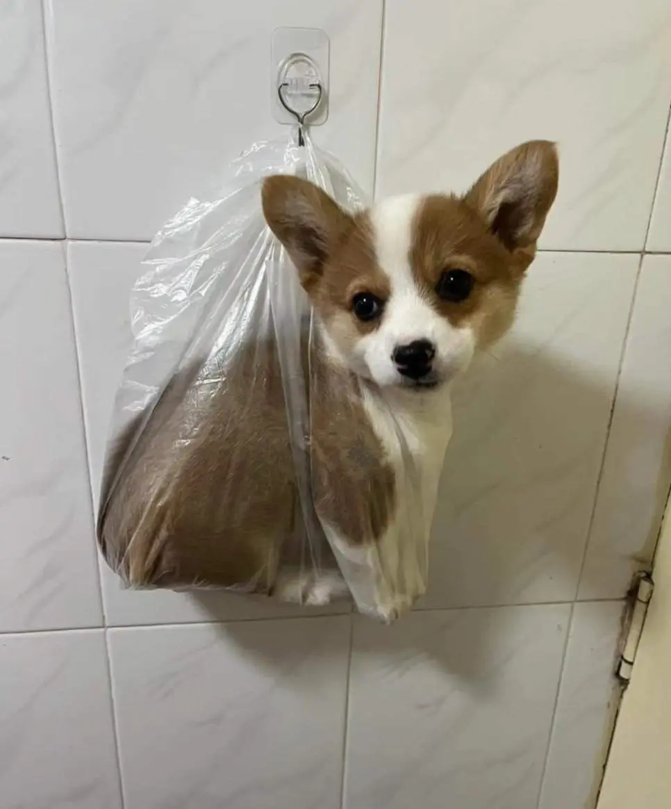

배변봉투에 일단 담아서 걸어놓음

배변봉투에 일단 담아서 걸어놓음
안질긴 배봉은..
개 : 어디서 밥냄새난다!
아뇨 똥인데요
내 심장..
겹노
가방에 담아놓은거 생각나네
자작추
편하게 같이 지켜주면서 싸는구도네..
????: 주인이 뭔가 고소하고 담백하며 먹음직스런 덩어리를 엉덩이에서 생산하고 있다.
해병간식
걸어둔 게 귀엽네 ㅋㅋㅋ
몸무게가 몇키로야 ㅋㅋㅋ
아... 심장이 너무 아픈 거시와여...
너무귀엽다....무슨종이야?
사막여우
여우치곤 얌전하네
웨일스 귀염둥이
웰시 코기
웰시코기 새끼 크면 봉다리에 안들어가
똥내 다 맡고 있는거잖
입으로 숨쉬고 있음
거기 매달려서 내가 똥싸는걸 직관하렴
봉다리에 들어갈만한 크기라 넘무 부럽다...
나도 우리집 진도 강아지 산책할때 저런일 있었는데
이새끼 나급한거 알면서도 지 산책이 더 중요한지 안가진도 시전하더라. 그래서 공주님 안기하고 집으로 존나뛰어감.
엘베앞에서부터 똥 엉덩이 바깥으로 삐져나오기 직전이었는데 시발 나무아미타불 준내 외치면서 버텨서 극적으로 팬티에 안뭍히고 집들어옴
뭍x 묻o
새끼때는 저게 가능하지 ㅋㅋㅋㅋㅋ
배봉 질기네